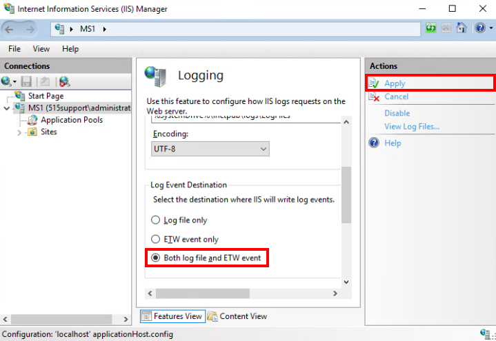

SIEM Configuration
Overview
Configured Winlogbeat agent, Wazuh HIDS, syslog, and pfSense firewall to manage various log types on SIEM utilizing Elastic Stack (Logstash, ElasticSearch, and Kibana).
Lab Environment
- SIEM1 (SIEM)
- PC1 (Host)
- DC1 (Beats Agent)
- MS1 (IIS Server)
- MS1 (IIS Server)
- UTM1 (pfSense Firwall Host)
Network Sensor Interface Configuration
SIEM1 has two network interfaces. eth0 is a management interface with IP address 10.1.0.246.
eth1 has no IP address and is used to sniff traffic in the local network.
On the terminal the following command tested the port mirroring.
sudo tcpdump -ni eth1 ip
Traffic is already monitored by Zeek (Bro).
Filter rules send notable events to SIEM1's logging engine Elastic Stack (Logstash, ElasticSearch, and Kibana).
The following command can be used to check on all services.
sudo so-status
Kibana is a visual tool used to configure dashboards for different categories, showing data in graph and table formats.
Connections can be selected to check all the local host IPs are present.
On PC1, Zenmap was used to perform a default intense scan against 10.1.0.1.
On SIEM1 in Kibana, Zeek notices and NIDS categories for scanning activity can be seen.
The NIDS alert was generated by a Snort IDS engine and rule set.
Beats Agent Configuration
Winlogbeat (Beats) collects Windows logs, acting as a Agent for it's respective host.
In DC1 in the winlogbeat.yml file, under the "output.logstash:" section, hosts IP was changed to 10.1.0.246 port 5044.
Note: yaml files are white space sensitive.
Settings are grouped by indentation and tabs should not be used.
Conventional rules use two spaces per indentation level.
ElasticSearch provides storage and query functionality.
Logstash is an engine for collecting different types of data from various sources via a pipeline.
The pipeline takes inputs, such as syslog or a Beats agent, and filters the data to normalize it.
Moving the edited configuration file to Program Files, it can be tested with the following terminal command:
cd 'C:\Program Files (x86)\winlogbeat'
.\winlogbeat test config -c winlogbeat.yml -e
The end of the output should read "Config OK." if done correctly.
The following two commands install and start the service.
.\install-service-winlogbeat
start-service winlogbeat
In SIEM1, the following command shows the firewall configuration.
sudo so-allow-view
It has been set to allow traffic over the Beats port 5044.
Logstash and other components run in Docker containers.
In SIEM1, alerts should be generated from the Agent activity.
Application Logging Configuration
In MS1 under Internet Information Services Manager, the Logging applet was selected configure application logs to send to SIEM1.
Under Log Event Destination, "both log file and ETW event" was selected and applied.

The following command can retreive the name of the event log capturing IIS access events.
get-winevent -listlog * | where-object { $_.logname -like “*IIS*”} | format-list -property logname
Using the last log path, copy and paste it into the winlogbeat.yml file.
Make sure the configuration file was edited correctly by testing with the same command as the previous edit, then install and start winlogbeat.
Use PC1 to generate network activity, such as using a network share drive or browsing a webpage.
HIDS Agent Configuration
On PC1, Wazuh was installed as a HIDS Agent. Wazuh is a forked version of OSSEC from Security Onion.
The following command will associate PC1 with SIEM1.
“C:\Program Files (x86)\ossec-agent\agent-auth.exe” -m 10.1.0.246
In the Wazuh Agent Manager box, refreshing will automatically load an authentication key.
SEIM1's IP address was added and saved, then the agent was started.
Kibana Query
On SIEM1 in Kibana, an index pattern was created named logstash-ossec-* without a time filter.
The following query expression was used on logstash-ossec-* to view the PC1 activity.
syslog Configuration
On PC1, the IP address 10.1.0.254 was used in the browser to access the pfSense interface on UTM1.
In the System Log settings, remote logging was enabled.
Lower in the settings, remote log server was set to 10.1.0.246:514 and filtered to System Events and Firewall Events only.
Another index pattern was created in Kibana to query syslog-sourceip: 10.1.0.254.
syslog activity should be seen indicating syslog tracking by SIEM1.